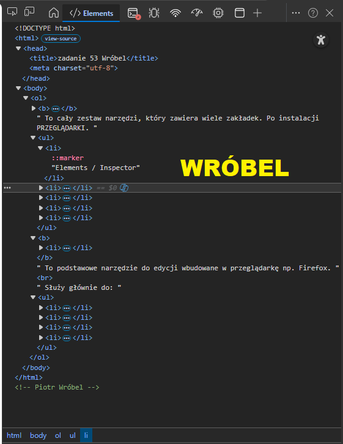

<!DOCTYPE html> <html> <head> <title>zadanie 53 Wróbel</title> <meta charset="utf-8" /> </head> <body> <ol> <b><li>Do czego służy Pasek dewelopera, kiedy jest gotowy do użycia, wymień zakładki Paska developera. </li></b> To cały zestaw narzędzi, który zawiera wiele zakładek. Po instalacji PRZEGLĄDARKI. <ul> <li>Elements / Inspector</li> <li>Console (błędy i logi JavaScript) </li> <li>Network (ruch sieciowy) </li> <li>Sources (debugowanie kodu) </li> <li>Application / Storage (cookies, localStorage itd.) </li> </ul> <b><li>Do czego służy Inspektor Elements, w jakiej zakładce się znajduje, do czego służy? </li></b> To podstawowe narzędzie do edycji wbudowane w przeglądarkę np. Firefox. <br> Służy głównie do: <ul> <li>podglądu struktury HTML strony </li> <li>edycji HTML i CSS „na żywo” </li> <li>sprawdzania stylów (kolory, marginesy, fonty) </li> <li>zaznaczania elementów na stronie</li> </ul> </ol> <p></p> </body> </html> <!-- Piotr Wróbel -->